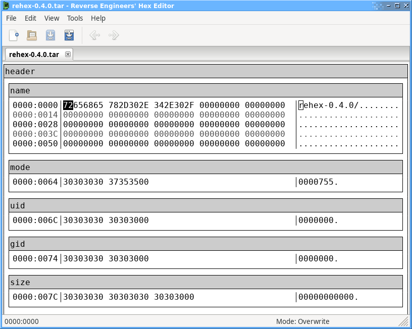
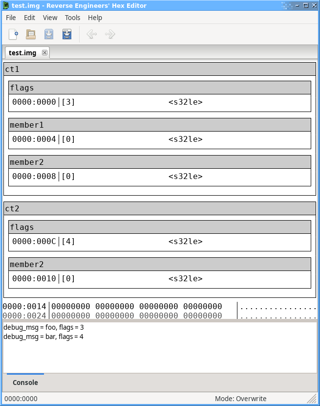

Types
Basic Types
The types used in templates are based on C types. The following types are implemented and may be used to declare both data in a file as well as local variables.
- char / int8_t - Signed 8-bit integer
- uint8_t - Unsigned 8-bit integer
- int16_t - Signed 16-bit integer
- uint16_t - Unsigned 16-bit integer
- int / int32_t - Signed 32-bit integer
- uint32_t - Unsigned 32-bit integer
- int64_t - Signed 64-bit integer
- uint64_t - Unsigned 64-bit integer
- float - 32-bit floating-point number
- double - 64-bit floating-point number
The signed and unsigned keywords from C are present and can be used with any integer type to make a signed/unsigned version.
Arrays
Arrays are also present from C and can be used to declare file data or local variables.
uint32_t data_length; uint8_t data[data_length]; local uint8_t data_copy[data_length] = data;
Unlike C arrays, arrays in templates have a known size and can be resized at runtime. Local arrays can be grown or shrunk arbitrarily while file arrays can only be grown, and not once further file variables have been defined after the array. See Array Functions for more information.
Multidimensional arrays are not currently supported.
Strings
Strings may be represented as char arrays like in C, or using the built-in variable-length string type.
The string type can only be used for local variables as it has no format in a file, while char[] can be used in both contexts.
Implicit conversions between string and char[] are allowed, as shown by the examples below:
/* Creates 's' containing "Hello world" and 't' containing "Hello world"
* with nul bytes to pad the remaining space.
*/
string s = "Hello world";
char t[32] = s;
/* Passing a string to a function that takes a char[] */
void func1(char[] p)
{
/* p is a char[] array, containing "Hello world" with no padding. */
}
func1(s);
/* Passing a char[] to a function that takes a string. */
void func2(string p)
{
/* p is a string containing "Hello world" with no padding. */
}
func2(t);
Structures
Structures like their C counterparts exist too. You can use a structure to logically group or reuse things such as headers.
struct posix_tar_header
{ /* byte offset */
char name[100]; /* 0 */
char mode[8]; /* 100 */
char uid[8]; /* 108 */
char gid[8]; /* 116 */
char size[12]; /* 124 */
/* And so on... I think you get the idea. */
};
struct posix_tar_header header;

Unlike C structures, structures in a template can contain arbitrary code, for example to conditionally declare certain members based on preceding members and can even take arguments like a function.
struct complex_thing(string debug_msg)
{
unsigned int flags;
if(flags & 1) {
int member1; /* Only declared if "flags" member has the 1 bit set. */
}
int member2;
Printf("debug_msg = %s, flags = %d\n", debug_msg, flags);
};
struct complex_thing ct1("foo");
struct complex_thing ct2("bar");

Enumerations
Enumerations like C/C++ are present, but with some differences:
- The variable type is just an alias to an explicit storage type ("int" by default)
- There is no type safety - mix and match any enums and other numbers with no casting
/* Declaring and using a plain enum. */
enum simple_enum_type
{
ENUM_ONE,
ENUM_TWO,
ENUM_THREE,
};
enum simple_enum_type v; /* Underlying type is "int" */
/* Declaring an anonymous enum variable. */
enum
{
ANON_ONE,
ANON_FOUR = 4,
ANON_FIVE,
} anonymous_enum_var;
/* Declaring an enum with a specific type. */
enum <uint8_t> one_byte_enum
{
SPEC_ONE,
SPEC_TWO,
SPEC_THREE,
};
enum one_byte_enum o; /* Underlying type is "uint8_t" */
Typedefs
Typedefs exist and let you alias types just like in C, not a whole lot else to say really.
typedef uint16_t WORD; typedef unsigned int DWORD;
References
References (like in C++) are available and mainly exist for passing values by reference into structs/functions to allow modifications by the function to be visible by the caller.
local int x = 1;
void set_int_in_a_convoluted_manner(int &i, int new_value)
{
i = new_value;
}
set_int_in_a_convoluted_manner(x, 2); /* x is now 2 */
Raw pointers like in C are not supported.